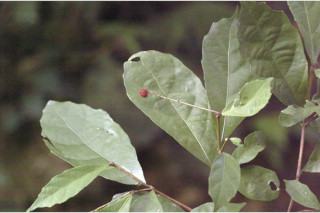
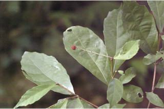

Trees up to 5 m tall.
5 ಮೀ. ಎತ್ತರದವರೆಗೆ ಬೆಳೆಯುವ ಮರಗಳು.
5 മീറ്റര് വരെ ഉയരമുളള മരങ്ങള്.
மரங்கள் 5மீ. உயரம் வரை வளரக்கூடியது
Branchlets flat, minutely pubescent.
ಕಿರುಕೊಂಬೆಗಳು ಚಪ್ಪಟೆಯಾಗಿರುತ್ತದೆ ಮತ್ತು ಸೂಕ್ಷ್ಮ ಮೃದು ತುಪ್ಪಳ ಹೊಂದಿರುತ್ತವೆ.
ചെറുതായി നനുത്ത രോമിലമായ, പരന്ന ഉപശാഖകള്.
சிறிய நுனிக்கிளைகள் தட்டையானது, மிக நுண்ணிய உரோமங்களுடையது.
Leaves simple, opposite with opposite, decussate, unequal pairs; stipule caducous; petiole to 1.5 cm long, terete, swollen at both ends, pubescent; lamina 7-24 x 2.5-7.5 cm, narrow elliptic-rhomboid, apex caudate or caudate - acuminate, base acute or slightly attenuate, margin sinuately dentate, glabrous above, resinous yellow glandular beneath, pubescent on midrib and nerves beneath, chartaceous or subcoriaceous; midrib raised above; secondary_nerves 6-8 pairs, gradually curved; tertiary_nerves obliquely_percurrent.
ಎಲೆಗಳು ಸರಳವಾಗಿದ್ದು ಅಭಿಮುಖ – ಕತ್ತರಿಯಾಕಾರದ ಜೋಡನಾ ವ್ಯವಸ್ಥೆಯಲ್ಲಿದ್ದು ಅಸಮ ಜೋಡಿಗಳನ್ನೊಳಗೊಂಡಿರುತ್ತವೆ; ಕಾವಿನೆಲೆಗಳು ಉದುರಿಹೋಗುತ್ತವೆ; ತೊಟ್ಟುಗಳು 1.5 ಸೆಂ.ಮೀ.ಉದ್ದವಿದ್ದು ದುಂಡಾಗಿರುತ್ತವೆ ಮತ್ತು ಎರಡೂ ತುದಿಯಲ್ಲಿ ಊದಿಕೊಂಡಿರುತ್ತವೆ ಹಾಗೂ ಮೃದುತುಪ್ಪಳದಿಂದ ಕೂಡಿರುತ್ತವೆ; ಪತ್ರಗಳು 7 -24 X 2.5 – 7.5 ಸೆಂ. ಮೀ. ಗಾತ್ರದಲ್ಲಿದ್ದು,ಸಂಕುಚಿತವಾದ ಅಂಡವೃತ್ತ- ವಜ್ರದ ಆಕಾರ ಹೊಂದಿರುತ್ತವೆ; ಪತ್ರಗಳ ತುದಿ ಉದ್ದವಾದ ಕ್ರಮೇಣವಾಗಿ ಚೂಪಾದುದರಿಂದ ಬಾಲರೂಪಿಯವರೆಗಿನ ಮಾದರಿಯಲ್ಲಿರುತ್ತದೆ; ಬುಡ ಚೂಪಾಗಿರುತ್ತದೆ ಅಥವಾ ಸ್ವಲ್ಪಮಟ್ಟಿಗೆ ಒಳಬಾಗಿದ ಮಾದರಿಯಲ್ಲಿರುತ್ತದೆ;ಅಂಚು ವಂಕಿಯ ರೀತಿಯ ದಂತಿತವಾಗಿರುತ್ತದೆ; ಪತ್ರದ ಮೇಲ್ಭಾಗ ರೋಮರಹಿತವಾಗಿದ್ದು ತಳಭಾಗ ಹಳದಿ ಬಣ್ಣದ ಅಂಟು ರಸ ಗ್ರಂಥಿಗಳ ಸಮೇತಇರುತ್ತವೆ;ಎರಡನೇ ದರ್ಜೆಯ ನಾಳಗಳು 6 ರಿಂದ 8 ಕ್ರಮೇಣವಾಗಿ ಬಾಗುವ ಜೋಡಿಗಳಿರುತ್ತವೆ; ಮೂರನೇ ದರ್ಜೆಯ ನಾಳಗಳು ಓರೆಯಾಗಿದ್ದು ಎಲೆ ದಿಂಡಿಗೆ ಅಡ್ಡವಾಗಿ ಕೂಡುವಂತವು.
ലഘുവായ ഇലകള് സമ്മുഖ ഡെക്കുസേറ്റ് ക്രമത്തില് അസമ ജോഡികളായി ഉണ്ടാകുന്നു; അനുപര്ണ്ണങ്ങള് എളുപ്പം കൊഴിഞ്ഞ് വീഴുന്നവയാണ്; നനുത്ത രോമിലവും, രണ്ടറ്റവും വീര്ത്തതുമായ ഉരുണ്ട ഇലഞെട്ടിന് 1.5 സെ.മീ വരെ നീളം; പത്രഫലകത്തിന് 7 സെ.മീ മുതല് 24 സെ.മീ വരെ നീളവും 2.5 സെ.മീ മുതല് 7.5 സെ.മീ വരെ വീതിയും വീതികുറഞ്ഞ ദീര്ഘവൃത്തീയ- ദീര്ഘവചതുര ആകൃതിയിലുമാണ്, പത്രാഗ്രം വാലോട്കൂടിയതോ വാലോട് കൂടിയ-ദീര്ഘാഗ്രമോ ആണ്, പത്രാധാരം നിശിതമോ ചെറുതായി അകവളവോടെ നേര്ത്തവസാനിക്കുന്നതോ ആണ്, അരികുകള് സിനുവേറ്റ് രീതിയില് ദന്തിതമാണ്, മുകളില് അരോമിലമാണ്, കീഴെ, കൊഴുത്ത മഞ്ഞ സ്രവമുളള ഗ്രന്ഥികള് നിറഞ്ഞതുമാണ്; കീഴെ മുഖ്യസിരയിലും ഞരമ്പുകളിലും നനുത്ത രോമിലമാണ്, കടലാസ് പോലത്തെയോ ഉപചര്മ്മിലമോ ആയ പ്രകൃതം; മുഖ്യസിര മുകളില് ഉയര്ന്നതാണ്; സാവധാനം വളഞ്ഞ് പോകുന്ന 6 മുതല് 8 വരെ ജോഡി ദ്വിതീയഞരമ്പുകള്; തൃതീയ ഞരമ്പുകള് ചരിഞ്ഞ പെര്കറന്റ് വിധത്തിലാണ്.
இலைகள் தனித்தவை, எதிரடுக்கமானவை, குறுக்குமறுக்கமானவை, எதிராக அமைந்த ஜோடி இலைகள் சமமற்றவை; இலையடிச்செதில் எளிதில் உதிரக்கூடியவை; இலைக்காம்பு 1.5 செ.மீ. நீளமானது, குறுக்குவெட்டுத் தோற்றத்தில் வளையமானது, காம்பின் இருமுனைகளும் உப்பியவை, உரோமங்களுடையது; இலையின் அலகு 7-24 x 2.5-7.5 செ.மீ., குறுகிய நீள்வட்ட-சாய்சதுரமான (ராம்பாய்டு), அலகின் நுனி வால் அல்லது வால்-அதிக்கூரியது, அலகின் தளம் கூரியது அல்லது சிறிது அட்டனுவேட், அலகின் விளிம்பு சிறிய பிளவுகள் போன்ற பற்களுடையது, அலகு உரோமங்களற்ற மேற்பகுதியுடையது, பிசின் (ரெசின்) சுரக்ககூடிய மஞ்சள் நிறமான சுரப்பிகளை இலையின் அடிப்புறத்திலுடையது, மையநரம்பு மற்றும் மற்ற நரம்புகள் அலகின் பின்புறத்தில் உரோமங்களுடையது, சார்ட்டேசியஸ் அல்லது சப்கோரியேசியஸ்; மையநரம்பு அலகின் மேற்பரப்பைவிட உயர்ந்தது; இரண்டாம் நிலை நரம்புகள் 6-8 ஜோடிகள், மெதுவாக வளைந்தது; மூன்றாம் நிலை நரம்புகள் தளத்தை நோக்கிய பெர்க்கரண்ட்.
Flowers unisexual; inflorescence simple or branched spike, axillary or terminal.
ಹೂಗಳು ಏಕಲಿಂಗಿಗಳಾಗಿರುತ್ತವೆ ; ಪುಷ್ಪಮಂಜರಿ ಅಕ್ಷಾಕಂಕುಳಿನಲ್ಲಿನ ಅಥವಾ ತುದಿಯಲ್ಲಿನ ಸರಳ ಅಥವಾ ಕವಲೊಡೆದ ಕದಿರುಮಂಜರಿ ಮಾದರಿಯಲ್ಲಿರುತ್ತದೆ.
പൂക്കള് ഏകലിംഗികളാണ്; പൂങ്കുലകള് കക്ഷീയമോ ഉച്ഛസ്ഥമോ ആയ ലഘുവായതോ ശാഖിതമായതോ ആയ സ്പൈക് ആണ്.
மலர்கள் ஓர்பாலானவை; மஞ்சரி தனித்த அல்லது கிளைத்த ஸ்பைக், இலைக்கோணங்களில் அல்லது தண்டின் நுனியில் காணப்படுபவை.
Capsule, 2-3 cocci, covered with long soft spines.
ಸಂಪುಟ ಫಲಗಳು 2 ರಿಂದ 3 ಮರಿಫಲಗಳನ್ನು ಹೊಂದಿದ್ದು ಉದ್ದನೆಯ ಹಾಗೂ ಮೃದುವಾದ ಮುಳ್ಳುಗಳನ್ನು ಹೊಂದಿರುತ್ತವೆ.
മൃദുവായ മുള്ളുകള് നിറഞ്ഞ കായ, രണ്ടോ മൂന്നോ അറകളുളള കാപ്സ്യൂള് ആണ്.
வெடிகனி (கேப்சூல்), 2-3 உருண்டையான கனி (காக்கை), நீண்ட மென்மையான முட்களுடையது.

 
